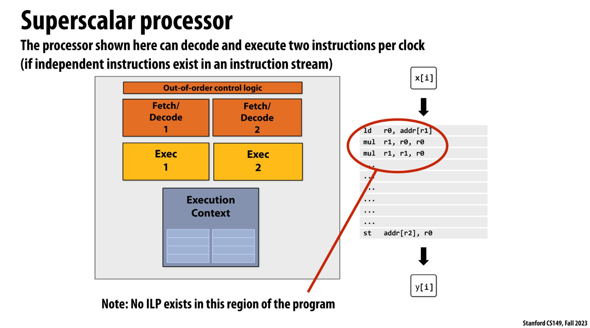
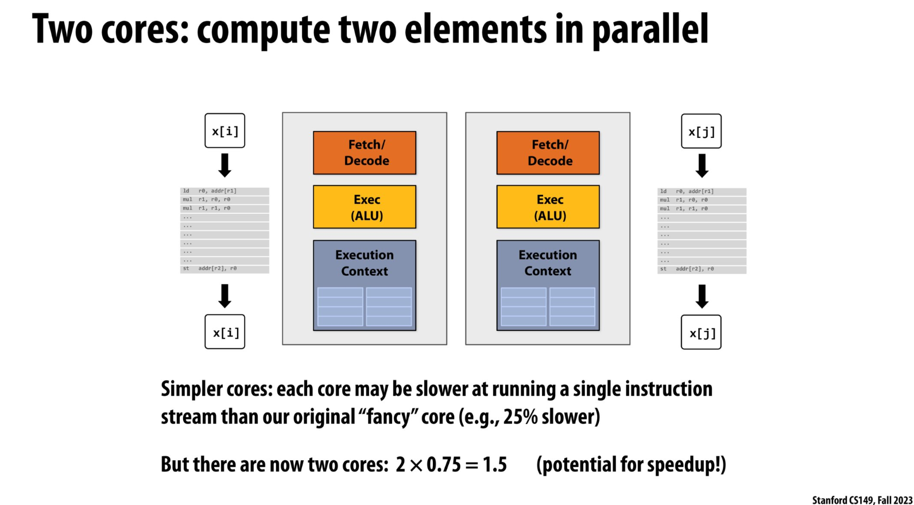
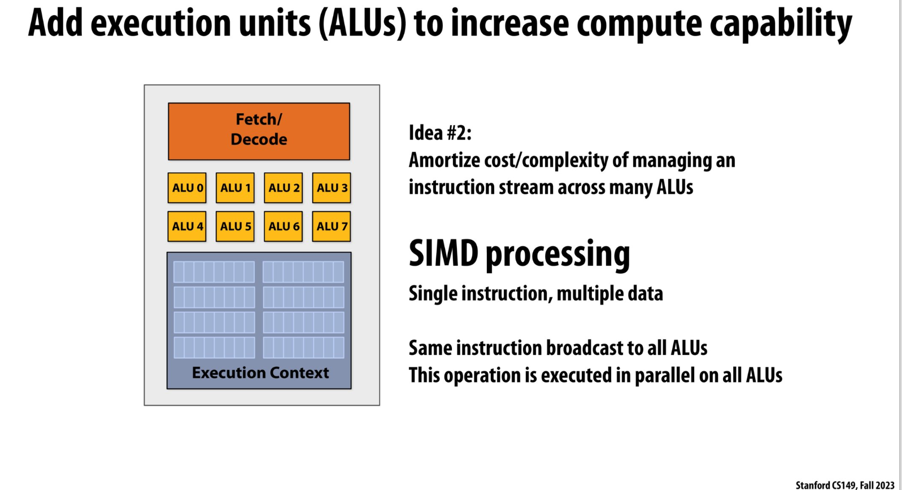
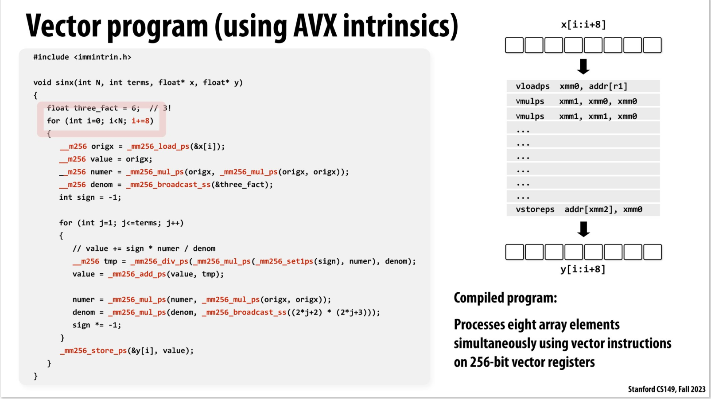
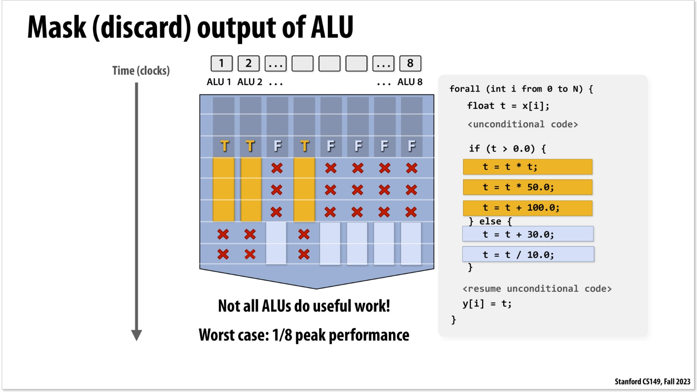
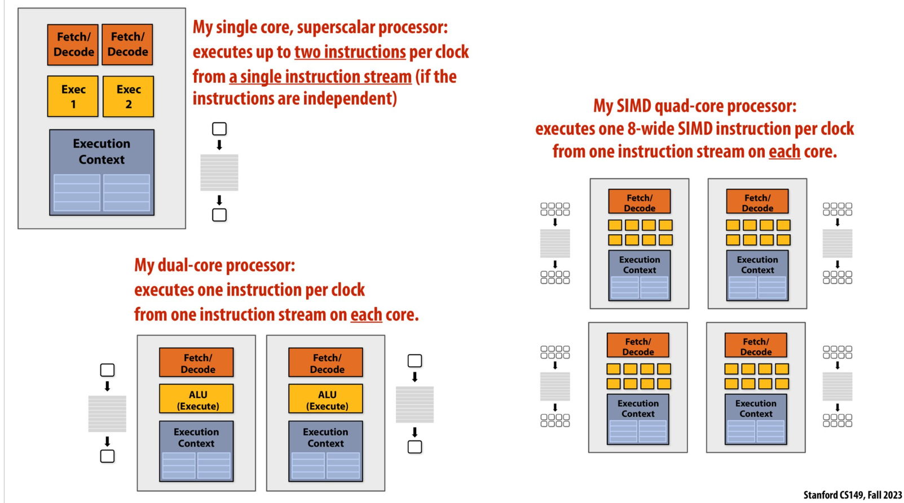
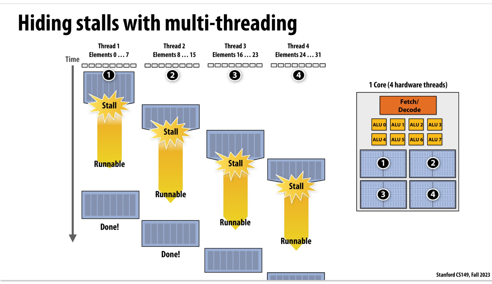

Stanford CS 149 2023 fall 课堂笔记 Lectrue 2
A Modern Multi-Core Processor
下面的代码,表示正弦函数X[N]的terms阶泰勒展开实现:
1 | void sinx {int N, int terms, float* x, float* y) |
串行执行指令,就是将整个函数运行,也就是经N个迭代
idea0:Superscalar processor
行不通,因为指令集上后面的指令依赖前面的计算,理论上不存在可以并行运行的指令集, Fetch/Decode无用
idea1: Multi-core era processor
理由:
processor使用大量的晶体管只能加速1个指令集流,因为只有1个core,为什么不把这部分晶体管用于重新构建core？
基于此的processor
前提是这部分程序本身外层for循环运行逻辑不是相互关联的,可以看做是独立的x[i] -> y[i]
代码优化
课堂上代码使用c++的线程库来模拟上述多核情景
应用:
- mutli-Core CPU
- Multi-core GPU: 144 processing block(SMs)
- Apple A15 Bionic: 异构CPU核
idea2:SIMD processing: single instruction, multiple data (单指令多数据流)处理器
理由:
由于函数代码的外层for循环只是输入的x[i]不同,内部均执行相同运算得到y[i]
基于此的processor:
parallel on all ALUs: 加入多个计算单元ALU,可以同时执行一样的运算,同时扩展上下文匹配

代码优化
作者使用一种名为Vector Program的方式,使得该方式能够一次性计算8个

思考:影响多个ALU在条件分支的并行能力
遇到条件分支,由于所有的ALU要执行相同逻辑,导致一部分在执行if语句的时候,另外的会空转
图中前段时间该processor的并行能力为满状态(8个ALU拉满)下的3/8,后段时间为5/8,平均时间内就是50%的运行效率
思考: 如果if语句执行时间非常长(数百万条指令), 而else语句只有1条指令,那么并行能力会大大减少(满足else条件的ALU等于没有被使用),最坏情况下效率会达到8个ALU并行的1/8
应用
- 现代GPU 使用8-32的SIMD宽
- 硬件（而非编译器）负责在 SIMD 算术逻辑单元（ALUs）上，对来自多个程序实例的相同指令，针对不同数据同时执行
总结
在各类CPU和GPU的设计综合运用了上述并行设计:
- CPU:
- GPU
内存加载
数据加载速度: L1缓存>L2缓存>L3缓存>>>内存DRAM
思考: 如果并行的程序从不同的位置加载数据,速度不一致应该怎么办?
idea:
加量Execution Context模块,实现多线程:在stall的时候(例如数据从DRAM加载)可以先切换上下文,从而执行别的操作
- 核心思想是hiding stall—— 用多线程切换，让硬件在一个线程阻塞时，用其他线程的计算填满空闲时间，保持核心高利用率
- 单个线程完成任务的时间可能变长(图中Thread1遇到stall->切换状态runnable->done这段时间涉及到各种切换开销),
- 整个process不会空等，转而执行其他线程（如 Thread 2/3/4）的指令,整体效率高(相比于1个thread)
- 适合数据并行、计算密集且线程数多 的任务（如图像渲染、深度学习），这类场景能通过大量线程 “填充满” 硬件资源
本博客所有文章除特别声明外，均采用 CC BY-NC-SA 4.0 许可协议。转载请注明来源 something for nothing！